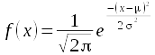

Why learn about the normal distribution
Probability distributions have a central place in statistical analysis. We already have experience with one probability distribution, the t-distribution, which we used to construct confidence intervals for estimated means. If you recall, we used the t-distribution as a mathematical model of a sampling distribution - that is, the distribution of means from many random samples drawn from the same population. We used the t-distribution to find how many standard errors we had to go from our sample mean to have a 95% chance of containing the population parameter we were estimating.
We can also use probability distributions as mathematical models of our variables. You have already learned that biological variables, such as human height, can be thought of as random variables, because if we randomly pick a person from a population to measure we cannot know ahead of time exactly how tall he or she will be. The concept of a random variable is a mathematical abstraction, and there are probability distributions that are perfect descriptions of random variables that we can use as models of the actual biological variables we work with.
To illustrate, let's look again at this human histogram illustrating the distribution of heights of a sample of women.
|
The mean height for this sample is 65.6, and the standard deviation is 2.6. The histogram is formed by having women stand behind signs that indicate their height to the nearest inch, and you can see that the longest lines (i.e. the tallest bars on the histogram) are 65 and 66 inches, on either side of the mean. The distribution also looks fairly symmetrical - the heights of the bars drops off more or less evenly as you move away from the mean in either direction. We would conclude that a histogram like this is bell-shaped, in spite of the less than perfect symmetry. The red curve that has been roughly superimposed over the distribution of students is a normal distribution, and although no smooth curve can follow the square tops of bars on a histogram perfectly, the curve looks like a reasonably good fit to the data. If you click on the image it will change first to a MINITAB histogram of the height data, and then to a histogram with a normal curve drawn over it - you can see that the normal curve approximates the histogram's shape. |
The normal curve doesn't match the histogram perfectly because the normal curve is smooth and symmetrical, whereas the human histogram is more uneven and not perfectly symmetrical around the mean. Additionally, the normal curve extends from negative infinity to positive infinity, and although the tails approach the x-axis asymptotically, the probability of heights that are impossibly high or impossibly low are not equal to 0 on the normal curve. Probability distributions are only ever approximations of the actual variables we use them to represent.
So, if the fit is only approximate, why might we want to use the normal curve to represent this sample? There are a couple of reasons:
- Probability distributions model long run behavior. This particular sample of students has a couple of unusually tall individuals, and does not appear to be perfectly symmetrical. But if we were to use a different group of women we certainly would not get precisely the same distribution as this one, and if the next set didn't have unusually tall women but did have one or two unusually short women then the skew would seem to go the other way. The normal curve smooths out the quirks of our particular sample and predicts what a population would look like if we had an infinitely large number of people to measure.
- Probabilities of any value can be calculated, even ones that have not been observed. Probability distributions, by definition, must include all possible data values, and give the probabilities of every possible value. The sum of the probabilities of all the possible data values is 1, by definition. So, for a smooth curve like the normal distribution, this means that the area under the curve is equal to 1. The normal curve extends from negative infinity to positive infinity, which allows us to calculate a probability for any height.
Of course, it is possible to calculate empirical probabilities from the data directly; for example, the probability that a woman in this population is 71 inches or taller based on the sample in the histogram above is a count of women that were 71 inches or taller (there are five: 71, 71, 71, 72, and 73 inches tall) divided by the total number of women in the sample (119), or 5/119 = 0.042.
But what if we want to know the probability of being 74 inches or taller? None of the women in this sample are that tall, so the probability estimate based just on our data would be 0/119 = 0. This is problematic, though, because a probability of 0 indicates an impossibility, and we know it isn't really impossible for a woman to be 74 inches tall, we just didn't happen to include one in this sample. If instead we use the normal curve as a model for our population, we can easily calculate the probability of observing a woman that is 74 inches or taller, and the non-zero probability we calculate would be a much better representative of reality than the 0 empirical probability estimate obtained from our small sample of data.
Using a normal distribution to calculate probabilities
The normal curve is defined by this formula:
There are several terms in this function, but two of them, π and e, are constants. The variable we are calculating probabilities for is x, and in the formula x represents a particular value of the variable. The other two terms are the parameters for the distribution: population mean (μ) and population standard deviation (σ). The mean is also referred to as the location of the distribution, because it determines where along the number line the curve is centered. The standard deviation is referred to as the scale of the distribution, because it determines the dispersion in the distribution.
Since a normal distribution is defined by just these two parameters, we can find the normal curve that fits our height data by using the sample mean and the sample standard deviation in place of mu and sigma - the mean height of 65.6 inches, and the standard deviation of 2.6 inches define the normal distribution that is overlaid on the histograms.
Normal distributions are continuous, smooth curves, with an area beneath them from -∞ to +∞ equal to 1. Probabilities from continuous probability distributions like the normal are always areas under the curve.
This leads to a problem - an area implies both a width and a height, but a single data value is a point along the number line that don't have a width. The height of the curve (f(x)) at a single data value is therefore called the probability density for a data value. When we use continuous probability distributions like the normal curve, the probability density for a single data value is defined, but the probability of obtaining any single data value is not defined.
So, with that in mind, let's look at how to calculate some probabilities from the normal distribution.
|
Here is the normal distribution for the height data, with a mean height of 65.6 inches, and a standard deviation of 2.6 inches. What if we wanted to know the percentage of the population that falls above 69.5 inches, given this distribution? If you click on the image the part of the curve that is at or above 69.5 inches is shaded red, and it's this area under the curve that we need. Since the area under the curve from negative to positive infinity is equal to 1, the area under a portion of the curve will be between 0 and 1, as a probability has to be. |
|
It's possible to use a computer to give us the probability - MINITAB allows you to specify a mean and standard deviation for the distribution, and define the region for which you want the probability. As you can see, based on MINITAB's calculation, the probability of being 69.5 inches or taller is 0.06681. |
Another way to find this probability is to convert this distribution of heights into one for which probabilities have already been calculated and laid out in a table, and then look up the numbers from the table. The standard normal distribution, or z-distribution, is a special case of a normal distribution that has a mean of zero and standard deviation of one. Tables of probabilities for the z-distribution are included in every introductory statistics textbook, and a copy is provided for you to use below. To use the standard normal we just need to convert our curve of heights to one in which the mean is equal to 0, and the standard deviation is equal to 1. This is done using a z-transformation.
The z-transformation
The z-transformation is really simple - subtracting the sample mean centers the distribution on 0 (i.e. the black data distribution slides left to center on 0, and becomes the red distribution). Dividing by the standard deviation converts the units of the data to standard deviation units, such that a 1 on the x-axis means 1 standard deviation (i.e. dividing the x-axis on the red distribution by its standard deviation of 2.6 scales it to have a standard deviation of 1, and converts it to the blue distribution). Subtracting the mean and dividing by the standard deviation gives the normal curve of heights a mean of 0 and a standard deviation of 1, and thus converts the curve for the height data into the standard normal.
We can place a single data value, xi, on the standard normal
distribution by subtracting the sample mean from it, and then dividing
this difference by the standard deviation:
The xi indicates the number whose probability we want to
calculate (69.5 for our example). The value calculated, z, is called the
z-score for xi.
To calculate a z-score for an xi of 69.5, we would plug 69.5 in for xi, 65.6 for x̄, and 2.6 for s, to get:
z = (69.5 - 65.6)/2.6 = 1.5
A z-score of 1.5 tells us that 69.6 is 1.5 standard deviation above the mean. In other words, a height of 69.5 on the black curve of heights is equivalent to 1.5 on the blue standard normal curve.
Enter lower and upper values
Lower z:
Upper z:
The curve to the left is a standard normal distribution, and the shaded region is defined by the lower and upper z-values that you specify. Initially these z-values are set to -1 and 1, which gives the probability of falling within 1 standard deviation of the mean.
Let's reproduce MINITAB's probability using this z-distribution. The probability of falling above a z-value is an upper-tail probability. To get the upper-tail probability of being taller than 69.5 inches, you need to set the lower z-value to 1.5, and the upper z-value to a big number like 1000 (the correct value would be infinity, but the curve is so close to the x-axis at 1000 standard deviations that the probability will be the same to four decimal places as if we had used infinity).
Once you set the z-values the upper tail will be shaded from 1.5 to positive infinity, and the area under the curve is the probability, which is equal to 0.0668, just like MINITAB told us it would be.
If you set the lower z-value to 0 and the upper z-value to a big number (1000 or more) you'll see the probability is 0.5000 - which tells you that half of the distribution falls above 0. As you increase the lower limit so that an increasingly small amount of the upper half of the curve is shaded, you'll see the probabilities decline from 0.5 towards 0. We can thus get any upper-tail probability we want this way.
But, if you don't have MINITAB handy, or a friendly statistics instructor to make a normal probability app for you, you can still solve normal probability problems using the z-distribution. All you need is a z-table.
Probability from a z-table
A version of the table to the right can be found in any statistics book. As the title says, it gives upper-tail probabilities for the standard normal distribution. All you need to do is to find your z-value, and then look up the probability in the body of the table. The z-values are given to two decimal places. To look up a z-value you need to:
- Find the first two digits of the z-value (including the whole number and the first decimal place) in the rows of the first column. For a z-value of 1.50, the right row is 1.5.
- Find the third digit of the z-value (the second decimal place) in the column headings. For a z-value of 1.50, the correct column is 0.
The green cell that is highlighted when you hover in the 1.5 row and 0 column contains the probability, which is 0.067 - this is the probability of a woman in our population being 69.5 inches or taller, and it matches the value you got from the curve and from MINITAB, rounded to three decimal places.
Recall that probabilities can be thought of as proportions of a total, and we can convert to percentages by multiplying by 100. Our probability of 0.067 tells us to expect 6.7% of this population of women to be 69.5 inches or taller.
Note that this table starts at 0.00, and doesn't include any negative numbers. Negative z-values are just values below the mean, so this table seems to only be capable of giving a) upper tail probabilities that b) are below the mean. Compared to using MINITAB or the applet, above, this seems limited - both MINITAB and the applet can calculate any range of values, in either tail of the distribution.
However, it turns out that with a little ingenuity we can use this z-table to obtain probabilities for any ranges of z-values that fall between -3.09 and +3.09. Additionally, we can use this upper-tail table to find lower-tail probabilities (i.e. probabilities of values less than or equal to z).
What if we wanted to know the proportion of women that are shorter than 61.7 inches, where (61.7 - 65.6)/2.6 = -1.5? This is a lower-tail probability, how do we get that from an upper-tail table?
Click here to see if you're right.
We only have probabilities for values for half of the curve. What if we wanted to know the proportion of women that are shorter than 69.5 inches instead of taller? How can we use this z-table to get the answer?
Click here to see if you're right.
What if we wanted to know the proportion of women that are taller than 61.7 inches? That is, we have a z-value of -1.5 and want to ask an upper-tail question with it. The answer is going to be bigger than 0.5, and there are no probabilities in the table bigger than that. What to do?
Click here to see if you're right.
Now a hard one - what if you wanted to know the probability of falling between 61.7 inches and 69.5 inches? That is, between 1.5 standard deviations below the mean and 1.5 standard deviations above the mean?
Click here to see if you're right.
The hardest part of normal probability problems is keeping track of what part of the curve you are trying to find. It's helpful to sketch a curve and shade the portion of the curve you need, so you can look up the right value from the z-table. To summarize:
| If you want to know this: | Do this: | |
|---|---|---|
| The probability of being above a positive z-value | Look up the z-value in the table, read the probability - this is already an upper-tail probability. | |
| The probability of being below a negative z-value | Look up the absolute value of the z-value in the table. This is the lower-tail probability for the negative z-value, because upper-tail and lower-tail probabilities with the same absolute value are identical. | |
| The probability of being above a negative z-value | Look up the absolute value of the z-value in the table to get the lower-tail probability, then subtract it from 1. | |
| The probability of being below a positive z-value | Look up the upper-tail probability for the z-value, subtract it
from 1. |
|
| The probability of falling between any two numbers | Subtract the probability of falling above the upper z-value from the probability of falling above the lower z-value. | |
When should you not use a normal curve to represent your data? And how do you know?
The short answer to the first question is that we should not use a probability distribution as a model for our data when the probability distribution does not match our data. It should be pretty obvious that we can't expect the normal curve to do a good job representing our data if our data are not normally distributed. The harder question is, how do we know when our data are or are not normally distributed?
|
If we look at the distribution of body lengths from our bears data set to the left, you can see the problems we have in making this judgment. The histogram is roughly bell-shaped, but the normal curve superimposed over it does not match perfectly. The distribution of heights of women, above, didn't match the normal distribution perfectly either, so how do we know when the mismatch is bad enough to reject the normal distribution as a model for our data? |
|
There are a variety of ways that normality can be assessed, but one effective way is through a normal probability plot. Normal probability plots compare how the data actually are distributed against how they would be distributed if they were from a normal distribution. How they would be distributed is determined by percentiles - percentiles for the data set are evaluated from the sorted data set, and the percentiles expected if the data were normally distributed come from lower-tail probabilities. For example, the shortest length in this data set is 36. With 143 data values, the smallest data point is expected to have 1/143 of the data values at or below it, where 1/143 is 0.006993, or 0.6993th percentile. If the data are normally distributed with a mean of 61.28 and a standard deviation of 9.352, the length that has a probability of 0.006993 is 38.296 - thus, the data value should be equal to 38.296 - close, but not identical, to the smallest data value. The next smallest data value is 37, which is the 2/143 = 0.014, or 1.4th percentile. For the normal distribution, the data value with a probability of 0.014 is 40.72 - again, close but not identical. If we continue to do this calculation for each of the data values, we would get an observed data value paired with a value expected if the data were normally distributed for each data point, and we could then plot them to see how well they match overall. The graph to the left is MINITAB's normal probability plot for these length data. Let's walk through the elements of the graph that you need to know to understand what it's showing you:
The points on this graph do not follow the diagonal line perfectly, but they do fall mostly between the prediction limits. With 143 data points we don't want to see more than 0.05 x 143 = 7.15 data points falling outside of the prediction limits, and it looks like there are only three or four that do. In addition to this graph, MINITAB reports the results of a goodness of fit test, called the Anderson-Darling test. The Anderson-Darling test measures how much difference there is between the observed data and what would be expected if the data were normally distributed, and produces the AD statistic from these differences. Perfectly normal data will have no difference between observed and expected values, and will have an AD value of 0. AD values get bigger as data diverges from normal. The AD test uses the AD statistic to get a p-value. A p-value is a probability of obtaining the AD statistic if the data are actually normally distributed. Small differences between observed and expected values will happen by chance, and thus the p-value generated from a small AD value will be large. Big differences between observed and expected values shouldn't happen very often by chance, and thus large AD values will generate small p-values. Whether a p-value is large or small is a judgment call, but the typical dividing line is p = 0.05. We're going to learn much, much more about statistical tests and p-values, but for now remember that this all boils down to a simple decision rule:
The AD value reported for the bear length data is 0.583, and P-Value is 0.127. We would conclude based on the AD test that the data are normally distributed (or, at least they are close enough that we can treat them as normally distributed). |
|
For comparison, look at the really non-normal distribution of body weights for bears in the histogram to the left - there are two modes, a small one on the right for big males and a bigger one on the left for females and juveniles. Since the normal curve does not overlap well with the histogram at all, it isn't surprising to see that our normal probability plot on the right shows the data diverging from the center line by quite a lot, with multiple points falling outside of the outer lines. There is also a distinct arching pattern in the data, and patterning like this is problematic - it happens when the data have a consistent distributional pattern, but the pattern isn't normal. Additionally, the AD test gives us a p-value less than 0.005 - both the graph and the AD test indicate the data are not normally distributed. Consequently, we might feel confident using the normal distribution as a model for our bear lengths, but would not want to use it as a model for our bear weights. |
Why are bell-shaped curves common in nature?
Many biological variables have bell-shaped distributions that are well-represented by a normal curve, which is why the curve was called "normal" - bell-shaped curves are so commonly found in nature that the discoverer of the normal distribution, Carl Friedrich Gauss, considered it to be the usual, expected distribution of data.
But why would that be? Let's look at a simple illustration.
|
Consider a simple case from quantitative genetics. Imagine that height is controlled by a single gene that has only two alleles, one "tall" and one "short" allele. Furthermore, imagine this is a case of incomplete dominance, meaning that heterozygotes that have one short and one tall allele are of intermediate height. If we let these short and tall alleles mix together randomly in the population, two shorts will mix together sometimes and give us shorter than average people, two talls will mix together to give us taller than average people, and a short and a tall will mix together to give us people of average height. Since you can get a mix of short and tall in two different ways (tall from mom, short from dad; or, short from mom, tall from dad) there will be more people of average height than there are shorter or taller people. The distribution should look like the one on the left. You can click on the image and it will change from "Number of tall alleles" to height, to show you there are only three possible heights in the population based on the number of tall alleles a person carries. The distribution is somewhat bell-shaped already, but doesn't show the kind of continuous variation we expect in a normal biological population. But this is because we imagined a very simplified case - traits like height are usually "polygenic", which means they are controlled by many genes instead of just one. |

For example, with just three genes contributing to height, each of which has one tall and one short allele, the distribution of heights looks like this graph, with seven different heights depending on the total number of tall alleles present at the three loci. If you click on the graph you'll see the range of heights has been kept the same, so each gene is having a smaller effect. We're assuming that each gene has the same amount of influence on height, so that we can express height as the number of tall alleles possessed. |
|
With 25 genes we can have from 0 to 50 tall alleles, and the distribution looks like this. You can see that as we add more genes the distribution of heights (as indicated by the number of "tall" alleles) begins to more and more closely resemble a bell shaped curve. The range of heights is still the same as the other two graphs, so each individual gene is having a very small effect on height. The collective contributions of many genes of small effect is giving us a fairly continuous, bell-shaped distribution. |
Studies of human height have found over 100 genes involved, so this example with 25 genes still is less complex than the actual story. Once you add in some environmental variation and developmental processes that modify the effects of the genes these discrete numbers will blend even more until they become a continuous distribution.
So, to answer the original question about why normal curves are common in nature... it turns out that in nature many variables are affected by large numbers of small, random, additive factors that tend to produce bell-shaped distributions. Thus, many of the variables we work with can be represented well using normal distributions.
Next activity
In this week's activity, we will measure some body dimensions for the students in this class, test whether they are normally distributed, and then calculate some probabilities from the normal curves that correspond with one of the variables.